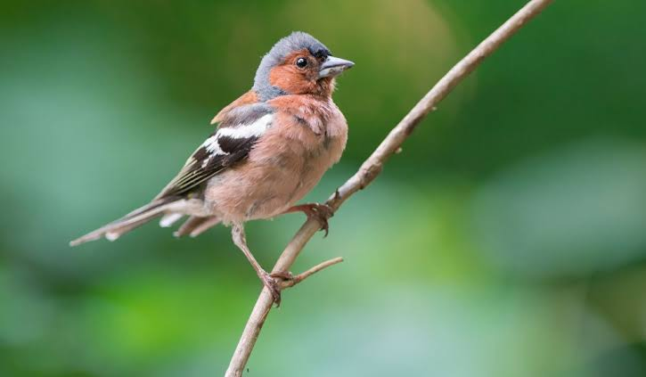

Passerine
Birds
A passerine is any bird of the order Passeriformes, which includes more than half of all bird species.
Order: Passeriformes; Linnaeus, 1758
Class: Aves
Kingdom: Animalia
Scientific name: Passeriformes
Lifespan: Atlantic canary: 10 years, House sparrow: 3 years, MORE
Mass: Atlantic canary: 8.4 – 24 g, House sparrow: 24 – 40 g,
Passeriform, (order Passeriformes), also called passerine or perching bird, any member of the largest order of birds and the dominant avian group on Earth today. The passeriform birds are true perching birds, with four toes, three directed forward and one backward.
Considered the most highly evolved of all birds, passerines have undergone an explosive evolutionary radiation in relatively recent geological time and now occur in abundance on all continents except Antarctica and on most oceanic islands.
Their rapid evolution and adaptation to virtually all terrestrial environments resulted in a large number of species, some 5,700, compared with only about 4,069 species of all other birds.
The order Passeriformes is divided by most taxonomists into two suborders: Tyranni and Passeri. The first suborder, containing about 1,250 species, is considered more primitive and is often grouped informally as the “suboscines.” Birds of suborder Passeri are often grouped as the “oscines,” or songbirds, for convenient comparison with the suboscines. Passeri is a very large group made up of about 4,500 species.
Passerines are small to medium-sized land birds, ranging from about 7.5 to about 117 cm (3 to 46 inches) in overall length. Among the tiniest species are some of the New World flycatchers (Tyrannidae), New Zealand wrens (Xenicidae), titmice (Paridae), flowerpeckers (Dicaeidae), tanagers (Thraupidae), and waxbills (Estrildidae).
The heaviest are the lyrebirds (Menuridae) of Australia and the ravens (Corvus). The longest species, the ribbon-tailed bird-of-paradise (Astrapia mayeri), is actually not so large in body bulk but has extremely long tail feathers.
Most passerine species fall within the range of about 12.5 to 20 cm (5 to 8 inches) in length and from 15 to 30 grams (0.5 to 1 ounce) in weight. A house sparrow (Passer domesticus), for example, is 12 to 15 cm (5 to 6 inches) long and weighs about 26 grams (0.9 ounce); a cardinal (Cardinalis cardinalis) is 20 to 23 cm (8 to 9 inches) long and weighs approximately 44 grams (1.6 ounces).
Biology of Passerine
Anatomy
The foot of a passerine has three toes directed forward and one toe directed backward, called anisodactyl arrangement, and the hind toe (hallux) joins the leg at approximately the same level as the front toes.
This arrangement enables passerine birds to easily perch upright on branches. The toes have no webbing or joining, but in some cotingas, the second and third toes are united at their basal third.
The leg of passerine birds contains an additional special adaptation for perching. A tendon in the rear of the leg running from the underside of the toes to the muscle behind the tibiotarsus will automatically be pulled and tighten when the leg bends,
causing the foot to curl and become stiff when the bird lands on a branch. This enables passerines to sleep while perching without falling off.
Most passerine birds have 12 tail feathers but the superb lyrebird has 16, and several spinetails in the family Furnariidae have 10, 8, or even 6, as is the case of Des Murs's wiretail.
Species adapted to tree trunk climbing such as woodcreeper and treecreepers have stiff tail feathers that are used as props during climbing. Extremely long tails used as sexual ornaments are shown by species in different families. A well-known example is the long-tailed widowbird.
Eggs and nests
The chicks of passerines are altricial: blind, featherless, and helpless when hatched from their eggs. Hence, the chicks require extensive parental care.
Most passerines lay coloured eggs, in contrast with nonpasserines, most of whose eggs are white except in some ground-nesting groups such as Charadriiformes and nightjars, where camouflage is necessary, and in some parasitic cuckoos, which match the
passerine host's egg. Vinous-throated parrotbill has two egg colours, white and blue. This can prevent the brood parasitic Common cuckoo.
Clutches vary considerably in size: some larger passerines of Australia such as lyrebirds and scrub-robins lay only a single egg, most smaller passerines in warmer climates lay between two and five, while in the higher latitudes of the Northern Hemisphere,
hole-nesting species like tits can lay up to a dozen and other species around five or six. The family Viduidae do not build their own nests, instead, they lay eggs in other birds' nests.
Origin and evolution
The evolutionary history of the passerine families and the relationships among them remained rather mysterious until the late 20th century.
In many cases, passerine families were grouped together on the basis of morphological similarities that, it is now believed, are the result of convergent evolution, not a close genetic relationship.
For example, the wrens of the Americas and Eurasia; those of Australia; and those of New Zealand look superficially similar and behave in similar ways, and yet belong to three far-flung branches of the passerine family tree; they are as unrelated as it is possible to be while remaining Passeriformes.
Much research remains to be done, but advances in molecular biology and improved paleobiogeographical data gradually are revealing a clearer picture of passerine origins and evolution that reconciles molecular affinities, the constraints of
morphology and the specifics of the fossil record. The first passerines are now thought to have evolved in the Southern Hemisphere in the late Paleocene or early Eocene, around 50 million years ago.
The initial split was between the New Zealand wrens (Acanthisittidae) and all other passerines, and the second split involved the Tyranni (suboscines) and the Passeri (oscines or songbirds). The latter experienced a great radiation of forms out of the Australian continent.
A major branch of the Passeri, parvorder Passerida, expanded deep into Eurasia and Africa, where a further explosive radiation of new lineages occurred.
This eventually led to three major Passerida lineages comprising about 4,000 species, which in addition to the Corvida and numerous minor lineages make up songbird diversity today. Extensive biogeographical mixing happens, with northern forms returning to the south, southern forms moving north, and so on.